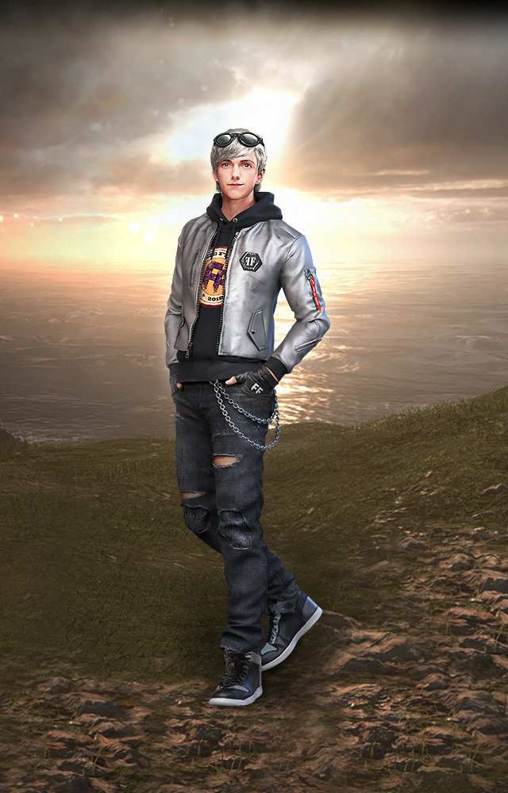
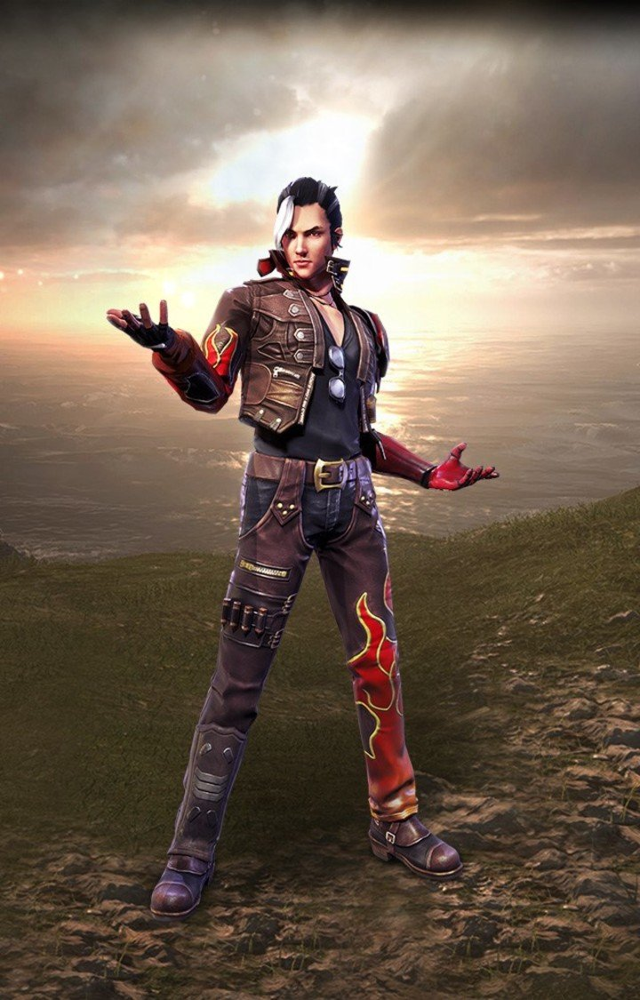
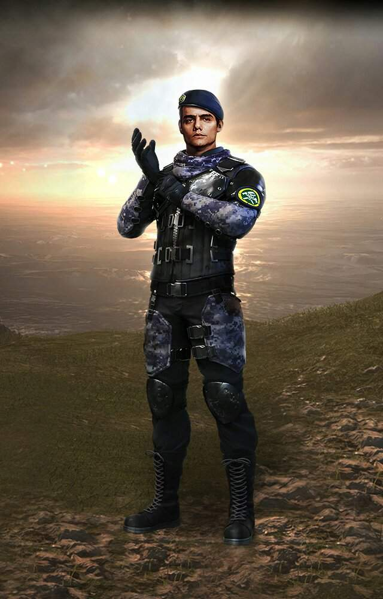
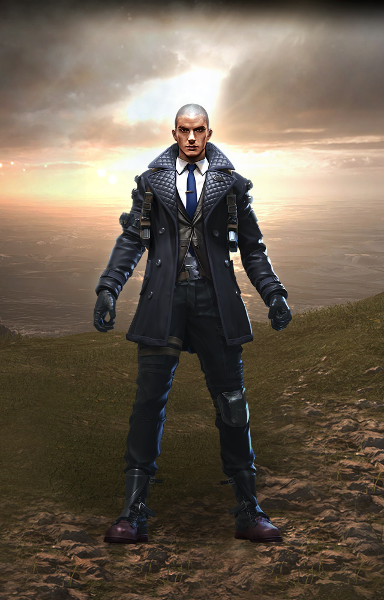
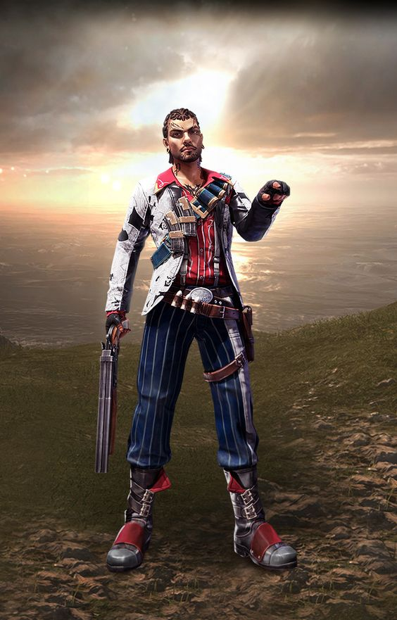
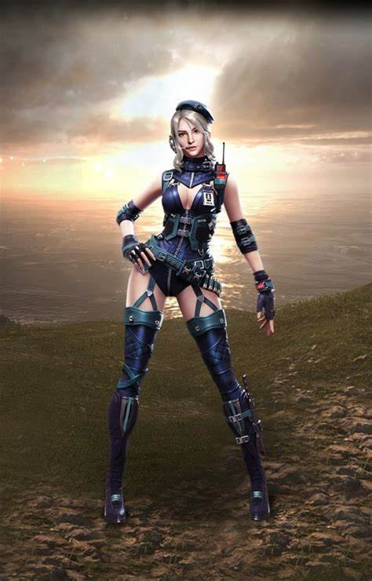
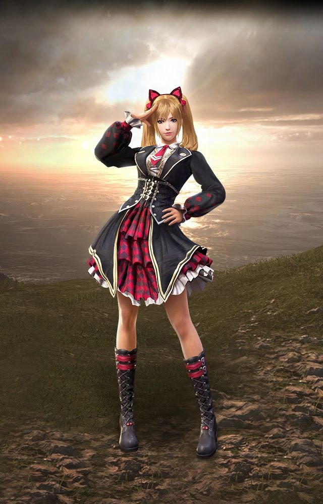
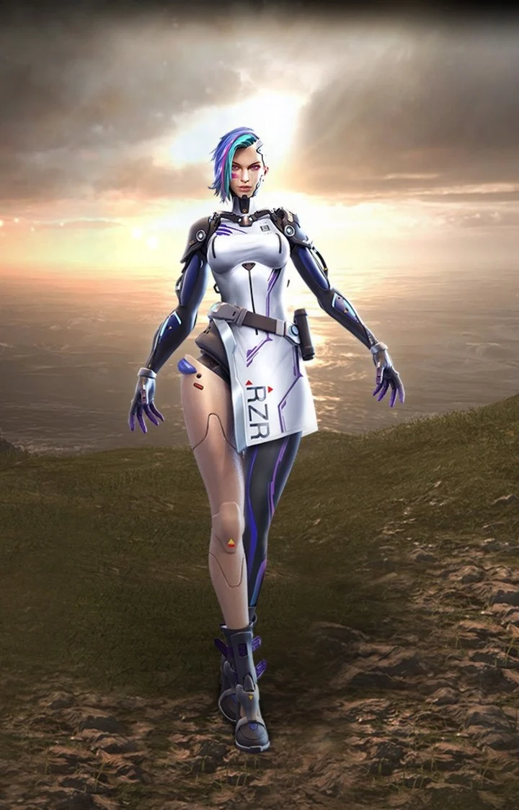

PERSONAJES
MAXIM

Come hongos y usa botiquines un 25% mas raapido.
HAYATO

Cuando tu pv baje 10% obtines 5% de penetracion de armadura.
STEFFIE

Crea un area de 4m donde los objetos lanzables no son validos los aliados en el area restauraran la durabilidad de la armadura 10% cada segundo y el daño de municion se redusira 20%. Duracin: 15s. Enfriamiento: 60s. Los efectos no se acumulan.
MOCO

Marca a los enemigos que le dispares durante 5s. La informaion se compartira con tus compañeros.
MIGUEL

Gana 200PE al deribar a un enemigo.
ANDREW
La perdida de durabilidad de la armadura desminuyo 20%.
RAFAEL

Cuando se usa rifles de francotirador y tirador, el sonido de los disparos se silencia y los disparos exitosos puede hacer que los enemigos derribados sangren un 90% mas rapido.
ANTONIO

Inicia la partida con 40 de HP adicional.
WUKONG
Se transforma en un arbusto con una reduccion de 10% en la velocidad de movimiento por 15s. Enfriamiento 200s . La transformacion termina cuando wukong ataca. El enfriamiento se reiniciara cuando Wukong derriba a un enemigo.
LAURA

Aumento al 50% la precision al usu¡ar la mira.
CAROLINE

Al usar una escopeta, incrementa la velocidad de movimiento un 13%.
A124

Libera una onda electromagnetica de 8m que inhabilita la activacion de habilidades de los enemigos.